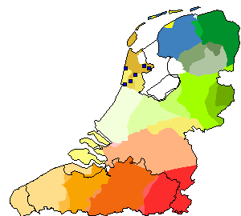
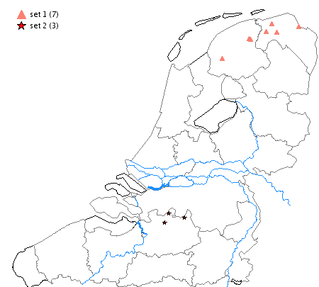
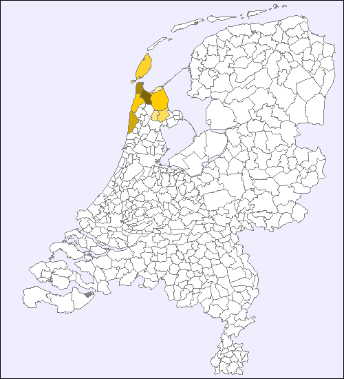

This is the REST service for the Meertens Kaart module.
This service can be used to create two kinds of maps:
Maps can be requested via GET or POST requests. If the only parameters are key-value pairs, they can go either in the request string (GET request) or in a JSON document in the request body (POST request). If there are structured parameters (e.g. lists of places to be drawn) a POST request with a JSON request body is advisable. However, a simple list of Kloeke codes can also be appended to the GET string, see examples below. Request string parameters can be combined with a JSON request body in a POST request. If the same parameters are in the request string and in the JSON document, the parameters from the request string have precedence over the ones in the request body.
Default map of the Dutch language area without placemarks, default size and format: ##KAART_URL##?type=dutchlanguagearea
The same, in SVG format, 800 pixels wide, with a title: ##KAART_URL##?type=dutchlanguagearea&format=svg&width=800&title=This+is+a+title
Map of the Dutch language area with two placemarks, formatted as a PHP-style array, default size and format: ##KAART_URL##?type=dutchlanguagearea&data[]=A001p&data[]=E192p
Map of the Dutch language area with four placemarks, formatted as a comma-separated string, default size and format:
##KAART_URL##?type=dutchlanguagearea&data=A001p,E192p,Q222p,I067p
Map of the municipalities, default size and format: ##KAART_URL##?type=municipalities
Map of the COROP areas, default size and format: ##KAART_URL##?type=corop
Map of the provinces, default size and format: ##KAART_URL##?type=provinces
Map of the dialect areas, default size and format: ##KAART_URL##?type=dialectareas
Map of the municipalities combined with the COROP areas: ##KAART_URL##?type=municipalities&additionaldata=corop
Combined map of Dutch and Flemish municipalities: ##KAART_URL##?type=municipalities_nl_flanders
Content-type should be application/json.
Map of the Dutch language area, only national borders, dialect map of Daan/Blok 1969 as background, five
placemarks.
Obtained by POSTing the following JSON document to ##KAART_URL##:
{
"data": ["E017p","E031a","E038a","E051p","E067q","E079p"],
"background": "daan_blok_1969",
"parts": ["nederland","vlaanderen"],
"type":"dutchlanguagearea",
"format": "png",
"width": 300
}

Map of the Dutch language area, two series of placemarks with non-default symbols.
Obtained by POSTing the following JSON document to ##KAART_URL##?type=dutchlanguagearea&format=png&width=450:
{
"data": [
{
"offset" : 1,
"name" : "set 1",
"symbol" : "triangle",
"color" : "salmon",
"kloekecodes" : ["B064b","B064p","B114p","C026p","C045p","C063a","C071p"]
},
{
"offset" : 2,
"name" : "set 2",
"symbol" : "star",
"kloekecodes" : ["K192p","K209p","K211p"]
}
]
}

Map of the Netherlands municipalities borders, with some municipalities highlighted.
Municipality codes can be obtained by adding possiblemunicipalities=1 or possibleareas=1 to
the URL.
Obtained by POSTing the following JSON document to ##KAART_URL##?type=gemeentes&format=png&width=500:
{
"g_0432" : "#FFE680",
"g_0420" : "#FFDD55",
"g_0448" : "#FFD42A",
"g_0476" : "#FFCC00",
"g_0373" : "#D4AA00",
"g_0400" : "#AA8800",
"g_0366" : "#806600",
"g_0463" : "#FFCC00",
"g_0462" : "#FFEEAA"
}
Content type should be multipart/form-data.
An alternative way to get data into the Kaart service is to upload a commma-separated file with area codes and colors. For example, the municipalities map above can alse be obtained by uploading a file with the following content to the URL ##KAART_URL##?type=gemeentes&format=png&width=500:
"g_0432","#FFE680" "g_0420","#FFDD55" "g_0448","#FFD42A" "g_0476","#FFCC00" "g_0373","#D4AA00" "g_0400","#AA8800" "g_0366","#806600" "g_0463","#FFCC00" "g_0462","#FFEEAA"
The name of the file or the field name in the form are not important. If multiple files are uploaded, only the first one is parsed. Currently this option is only possible with choropleth maps. The possible area codes for the choropleth map types can be obtained by adding the parameter possibleareas=1 to the URL, e.g. ##KAART_URL##?type=dialectareas&possibleareas=1 for the dialect areas, etc.
Note Many of the parameters below are meant for all choropleth map types. The current list of supported choropleth types is:
municipalities (synonymous with gemeentes)coropprovinces (synonymous with provincies)municipalities_flandersmunicipalities_nl_flandersdialectareas (synonymous with daan_blok_1969)| name | type | notes |
|---|---|---|
additionaldata |
string | Used to add an additional layer of data to a map. Currently only the combinations type=municipalities&additionaldata=corop,
type=municipalities&additionaldata=provinces or type=dutchlanguagearea&additionaldata=daan_blok_1969
are possible. More to follow.
|
altitudedifference |
integer | Only useful for KML maps of map type dutchlanguagearea. The difference (in meters above the earth
surface) in height between different series of placemarks.
|
background |
string | Only useful for maps of map type dutchlanguagearea. Background to be drawn between base map and
placemarks. Currently only the value daan_blok_1969 is allowed. Synonymous with additionaldata=daan_blok_1969.
|
base64 |
boolean | If this parameter is set to 1, on, true or yes, a
base64-encoded string representation of the map is returned.
|
complete |
boolean | If this parameter is set to 1, on, true or yes, and combined with possibleplacemarks=1,
the list of codes also contains geographical coordinates (both in the Dutch National Triangulation System (rd_x and rd_y) and WGS84 (lat and lng).
See ##KAART_URL##?possibleplacemarks=1&complete=1
|
data |
array, object or string | a list of Kloeke codes or postal codes; or area codes with either highlight colors or an object containing
outline, fill and strokewidth. Should generally be used in a POSTed JSON document, however simple lists can be
appended to the GET string. Examples (see also above): List of Kloeke codes: square, circle, triangle, bar_horizontal, bar_vertical,
line_horizontal, line_vertical, slash_left, slash_right,
plus or star.
Colors can be the name of a color (one of the 140 HTML colors), or a hexadecimal representation of the form #RRGGBB,
or or a hexadecimal representation of the form AABBGGRR. The 'AA' (opacity) part only has an effect
with KML maps.
|
drawlegend |
boolean | Only useful for maps of map type dutchlanguagearea. If this parameter is set to 0,
off, false or no, the map will not have a legend drawn on the left side.
|
format |
string | svg, png, gif, jpeg, kml or json.
json returns a geoJSON object.
|
height |
integer | height in pixels of the map. It is generally not a good idea to set the height explicitly, it is better to set the width and let the map calculate its own height. |
imagemap |
boolean | If this parameter is set to 1, on, true or yes, a list of
HTML <area> elements instead of a map image is returned. Can be used to create clickable bitmap maps. Note:
for maps of type municipalities, imagemap results in a complete imagemap for all municipalities only if:
links or tooltips.
|
interactive |
boolean | If this parameter is set to 1, on, true or yes, for SVG
maps, onmouseover and onmouseout events to show placenames, and for bitmaps maps, area elements with title and alt
attributes with placenames are added to all placemarks or areas.
|
link |
string | Template for a link to be added to placemark or municipalities. %s placeholders will be replaced by either the
Kloeke code or the municipality code. For maps of a bitmap format, the links will be added to the imagemap of the
picture, for maps of format SVG or KML they will be embedded in the XML. Example: ##KAART_URL##?type=municipalities&format=svg&link=http%3A%2F%2Fwww.example.com%2F%3Fcode%3D%25s
(link = urlencoded form of http://www.example.com/?code=%s). Note: when using placemarks, this only works if there is just one series. If you have more than one series of placemarks, the link parameter should
go into the data object, see the example under data above. Applies to all municipalities
of a map of type municipalities unless the parameter linkhighlightedonly is set to true.
|
linkhighlightedonly |
boolean | Only useful for choropleth map types. If this parameter is set to 1, on,
true or yes, a link set with the link parameter is only added to higlighted
municipalities which are set with the data parameter.
|
links |
object | Only useful for choropleth map types. List of links to be added to areas. Can
only be used in a POSTed JSON document. Example:
|
maptype |
string | Only useful for maps of map type dutchlanguagearea. One of standard (default) or
frequency. With maps of type frequency, a placemark (Kloeke code) which occurs twice is
drawn twice as big, three times becomes three times as big, etc.
|
parts |
array | Only useful for maps of map type dutchlanguagearea. Can be used in a POSTed JSON document or as a
comma-separated list in the GET string. List of parts of the map that should be displayed. See below for URL to
request the list of possible parts.
|
pathsfile |
string | Only useful for choropleth map types. If it is necessary to use a non-standard file with paths in a choropleth map, a filename can be given with this parameter.
Note that this file must exist on the server, be in the correct format and visible to (i.e. in the include_path of)
the server backend code of the Kaart module. |
possibleareas |
boolean | Only useful for choropleth map types. If this parameter is set to 1, on,
true or yes, a list (in JSON format) of possible areas (area codes plus names) is
returned. See ##KAART_URL##?possibleareas=1&type=municipalities
or ##KAART_URL##?possibleareas=1&type=corop. Note that the
type parameter should be present also.
|
possiblemunicipalities |
boolean | Only useful for choropleth map types on the municipality level. If this parameter is set to 1,
on, true or yes, a list (in JSON format) of possible municipalities
(municipality codes plus names) is returned. This is a synonym for
?possibleareas=1&type=municipalities. Note that the type parameter can be left out.
|
possibleparts |
boolean | If this parameter is set to 1, on, true or yes, a list (in
JSON format) of possible parts of the basemap is returned. See ##KAART_URL##?possibleparts=1
|
possibleplacemarks |
boolean | If this parameter is set to 1, on, true or yes, a list (in
JSON format) of possible placemarks (Kloeke codes plus placenames) is returned. See ##KAART_URL##?possibleplacemarks=1.
If the boolean parameter complete is added and set to 1, on, true or yes, and combined with possibleplacemarks=1,
the list of codes also contains geographical coordinates (both in the Dutch National Triangulation System (rd_x and rd_y) and WGS84 (lat and lng).
See ##KAART_URL##?possibleplacemarks=1&complete=1
|
removeduplicates |
boolean | Only useful for maps of map type dutchlanguagearea. If this parameter is set to 1,
on, true or yes, duplicates within the same series of placemarks will be
removed.
|
showcombinations |
boolean | Only useful for maps of map type dutchlanguagearea. If this parameter is set to 1,
on, true or yes, counts of overlapping placemarks between different series
will be shown in the legend.
|
target |
string | optional target for the link given in the link parameter (see above). Value of the "target"
attribute of the href element.
|
tooltips |
object | Only useful for choropleth map types. List of tooltips (informative texts) to be added to areas. Can only be
used in a POSTed JSON document. Example:
|
title |
string | Optional title of the map, will be displayed above the map if given. |
type |
string | dutchlanguagearea or one of the choropleth types. |
width |
integer | width in pixels of the map. Overrides the default. |
Source of the choropleth data of the Netherlands: CBS and the afdeling
Geo-informatie van het Kadaster.
Source of the choropleth data of Flanders: OpenStreetMap. This data
is © OpenStreetMap contributors and licensed under the Open
Data Commons Open Database License.
The REST service uses the REST service PHP library by Pieter van Beek.